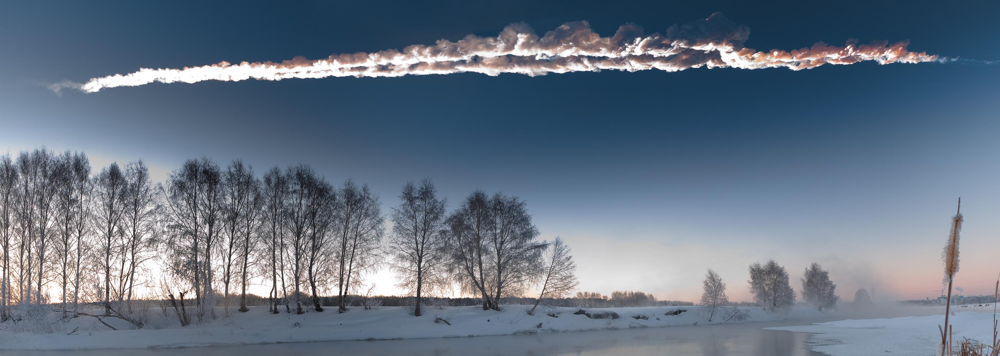

Near-Earth Objects (NEOs) are asteroids and comets whose orbits around the Sun bring them within 1.3 astronomical units (AU) of the Sun — that is, within 0.3 AU of Earth's orbit. The 1.3 AU threshold is set by the International Astronomical Union and encompasses all small Solar System bodies that could plausibly approach or cross Earth's orbit. As of December 2024, 37,378 NEOs are known; the vast majority (99.67%) are asteroids, classified as Near-Earth Asteroids (NEAs), while the remaining 0.33% are Near-Earth Comets (NECs).

M. Ahmetvaleev / NASA (PIA16829)
NEAs are divided into four dynamical groups based on orbital geometry. Atira asteroids have orbits lying entirely within Earth's orbit and are the rarest group, with only 34 known. Aten asteroids have semi-major axes less than 1 AU but aphelia that carry them beyond 0.983 AU, crossing Earth's orbit. Apollo asteroids are the most numerous group (56.5% of NEAs), with semi-major axes greater than 1 AU and perihelia that bring them inside Earth's orbit. Amor asteroids orbit between Earth and Mars, with perihelia between 1.017 and 1.3 AU; they do not currently cross Earth's orbit but may evolve into Earth-crossers through gravitational perturbations.
Most NEAs originate in the main asteroid belt, where gravitational resonances with Jupiter — particularly at the Kirkwood gaps — nudge asteroids into orbits that eventually bring them into the inner Solar System. The Yarkovsky effect, a subtle force arising from uneven thermal emission, slowly migrates asteroids into these resonance zones, providing a steady replenishment of the NEO population. A small fraction of NEAs are thought to be extinct cometary nuclei that have lost their surface volatiles.
A subset of NEOs is classified as Potentially Hazardous Objects (PHOs) — those with a Minimum Orbit Intersection Distance (MOID) less than 0.05 AU (approximately 7.5 million km) and an absolute magnitude H ≤ 22, corresponding to a diameter of roughly 140 m or larger. As of early 2025, 2,473 Potentially Hazardous Asteroids (PHAs) are known; more than 99% pose no impact threat within the next century. Impact frequencies scale steeply with size: objects around 60 m across strike Earth on average roughly once per 1,300 years, while kilometre-scale objects do so roughly once per 440,000 years. The Chelyabinsk event of February 2013 demonstrated that sub-PHA objects can still cause significant damage: an ~18 m asteroid entered the atmosphere undetected over Russia and released 400–500 kilotonnes of TNT equivalent energy, injuring approximately 1,500 people.
Impact risk is communicated using two standardised scales. The Torino Scale (0–10) combines impact probability and kinetic energy over the next 100 years; no object has ever exceeded level 4. The Palermo Scale provides a logarithmic comparison of impact probability against the background rate. In December 2004, the asteroid 99942 Apophis briefly reached Torino scale level 4 — the highest ever assigned — before precovery observations eliminated the threat. Apophis will make a historically close flyby in April 2029 at approximately 31,600 km, closer than geostationary satellites.
Systematic surveys including LINEAR, the Catalina Sky Survey, and NEOWISE have accelerated discovery rates dramatically. A 1998 US Congressional mandate required NASA to catalogue 90% of NEOs 1 km or larger; this goal was largely achieved by 2011. The Vera C. Rubin Observatory and the NEO Surveyor satellite are expected to extend completeness to objects 140 m and larger. Sample-return missions have added to the scientific value of NEOs: OSIRIS-REx returned material from the asteroid Bennu in 2023, and Hayabusa2 from Ryugu in 2020, providing pristine samples from the early Solar System. The Double Asteroid Redirection Test (DART) mission in September 2022 demonstrated that kinetic impactor deflection is viable, shortening the orbital period of the moonlet Dimorphos by 32 minutes.
See also: near-Earth asteroids, Apollo asteroids, Amor asteroids, Aten asteroids, potentially hazardous asteroids, asteroid belt, Kirkwood gaps, Apophis.